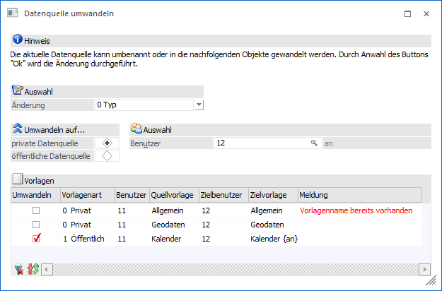
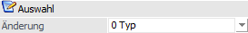
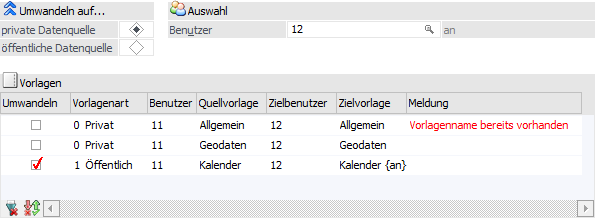
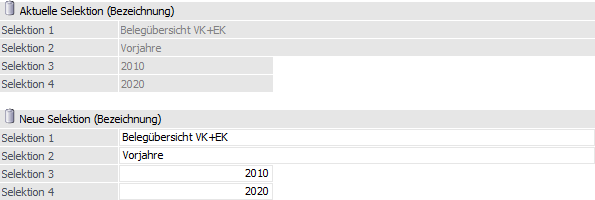
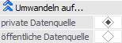
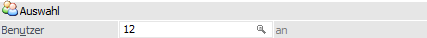
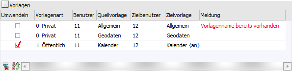
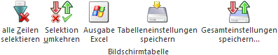

Mit Hilfe des Tabellenbuttons "Datenquelle umwandeln" (Tabelle "Datenquellen") stehen Volladministratoren oder Benutzern mit dem Teiladministrationsrecht "Datenadministration" folgende Funktionen zur Verfügung:
ü Die aktuelle Datenquelle kann auf einen anderen Benutzer übertragen oder veröffentlichen werden.
ü Die aktuellen Datenquelle (d.h. die Bezeichnung des Snapshots) kann umbenannt werden.

Folgende Einstellungen stehen zur Verfügung:
Auswahl

Ø Änderung
An dieser Stelle wird definiert, welche Änderung durchgeführt werden soll:
ü 0 - Typ
Die aktuelle
Datenquelle kann auf einen anderen Benutzer übertragen oder veröffentlichen
werden. Hierfür werden die Bereich "Umwandeln auf…" und "Benutzer-Auswahl",
sowie die Tabelle "Vorlagen", zur Verfügug gestellt.

ü 1 - Selektion (Bezeichnung)
Die
aktuellen Datenquelle (d.h. die Bezeichnung des Snapshots) kann umbenannt
werden. Hierfür werden die Bereiche "Aktuelle Selektion (Bezeichnung)" und "Neue
Selektion (Bezeichnung") zur Verfügung gestellt.

Achtung
Wurde die Datenquelle bereits irgendwo in der WinLine fix hinterlegt (z.B. "Cockpit" oder "Widget Filter"), so hat eine Umbenennung keine Auswirkung auf diese Bereiche. D.h. dort muss eine Anpassung manuell erfolgen.
Umwandeln auf…

Ø private Datenquelle / öffentliche Datenquelle
Bei Änderung des Typs wird an dieser Stelle definiert, ob die aktuelle Datenquellen auf einen anderen Benutzer verschoben werden soll (Auswahl "private Datenquelle") oder zukünftig allen Benutzern zur Verfügung stehen soll (Auswahl "öffentliche Datenquelle").
Auswahl

Ø Benutzer
Wenn die Datenquelle auf einen anderen Benutzer verschoben werden soll, so muss an dieser Stelle der Benutzer angegeben werden.
Tabelle "Vorlagen"

In der Tabelle werden alle Vorlagen des Benutzers, bezogen auf die umzuwandelnde Datenquelle, angezeigt. Mit Hilfe der Checkbox "Umwandeln" können die Vorlagen beim Wandeln der Datenquelle "mitgenommen" werden, d.h. der Typ der Vorlage (für private oder öffentliche Datenquelle) wird angepasst.
Hinweis
Wird in Widgets mit einer Datenherkunft ungleich "aktuell" gearbeitet, so muss dies nach der Umwandlung neu zugewiesen werden.
Ø Umwandeln
Mit Hilfe der Checkbox in der Spalte "Umwandeln" kann definiert werden, welche Vorlagen gewandelt werden sollen.
Hinweis
Wenn in der Spalte "Meldung" ein Fehler angezeigt wird (rote Schrift), so ist eine Aktivierung der Checkbox nicht möglich.
Ø Vorlagenart
In dieser Spalte wird angezeigt, welche Art die Vorlage aktuell aufweist (veröffentlicht oder nicht). Mit Hilfe der Auswahlliste kann die Art während der Umwandlung angepasst werden.
Ø Benutzer
An dieser Stelle wird die Benutzernummern des aktuellen Benutzers angezeigt.
Ø Benutzername [optional]
Hier wird der Loginname des aktuellen Benutzers angezeigt.
Ø Quellvorlage
In dieser Spalte wird der Namen der Vorlage angezeigt.
Ø Zielbenutzter
An dieser Stelle wird jener Benutzer angezeigt, welche die Vorlage nach Umwandlung als Eigentümer erhält.
Ø Zielvorlage
In dieser Spalte wird der Name der Zielvorlage angezeigt.
Ø Meldung
Wenn die Vorlage beim Zielbenutzer bereits existiert, so wird auf dieses an dieser Stelle hingewiesen. Eine Wandlung ist in solch einem Fall nicht möglich.
Tabellenbuttons

Ø alle Zeilen selektieren
Durch Anwahl dieses Buttons wird die Checkbox bei allen Zeilen aktiviert.
Ø Selektion umkehren
Durch Anwahl des Buttons "Selektion umkehren" werden die selektierten Zeilen deaktiviert und die nicht selektierten Zeilen aktiviert.
Ø Ausgabe Excel
Durch Anwahl des Buttons "Ausgabe Excel" wird der Inhalt der Tabelle an Microsoft Excel übergeben.
Ø Tabelleneinstellungen speichern
Die Spalten einer Tabelle können grundsätzlich an beliebige Positionen verschoben, bzw. in der Breite entsprechend angepasst werden. Durch Anwahl des Buttons "Tabelleneinstellungen speichern" werden die Einstellungen benutzerspezifisch gespeichert und bei dem nächsten Aufruf des Programmpunktes wieder vorgeschlagen.
Ø Gesamteinstellungen speichern
Im Gegensatz zu "Tabelleneinstellungen speichern" können mit "Gesamteinstellungen speichern" mehrere Tabellenaufbauten gespeichert und nach Wunsch geladen werden. Zusätzlich werden Sonderfunktionen der Tabelle (z.B. "Spalte gruppieren") ebenfalls bei der Speicherung bedacht.
Aktuelle Selektion (Bezeichnung) / Neue Selektion (Bezeichnung)
Ø Selektion 1 bis 4
In diesen Feldern werden die Selektionen der Datenquelle (d.h. des ausgewählten Snapshots) angezeigt (obere Bereich) und können editiert werden (untere Bereich). Hierbei handelt es sich bei Selektion 1 und 2 um Textfelder (100 Zeichen) und bei Selektion 3 und 4 um Zahlenfelder (10stellig ohne Nachkommastellen).
Hinweis
Bei Änderung der Bezeichnung wird geprüft, ob es bereits eine Datenquelle mit gleichlautenden Selektionen gibt. Ist dieses der Fall, so wird eine Speicherung bzw. das Verlassen des Felds unterbunden.
Buttons

Ø Ok
Durch Anwahl des Buttons "Ok" bzw. der Taste F5 wird die Datenquelle (ggfs. mit Vorlagen) umgewandelt bzw. die Selektion angepasst.
Ø Ende
Bei Anwahl des Buttons "Ende" bzw. der Taste ESC wird das Fenster geschlossen.